와인(음료)쇼케이스
업소용음료수냉장고 설치 전, 매장에서 미리 볼 다섯 가지
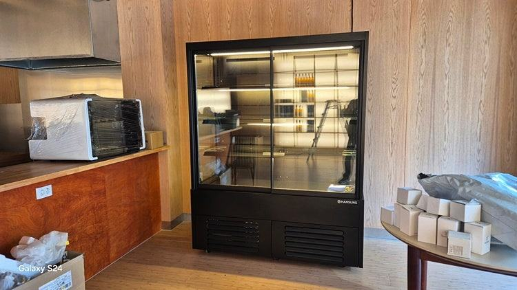
업소용음료수냉장고는 들어갈 자리만 비워 둔다고 설치가 끝나지 않습니다. 반입 경로와 바닥 수평, 전용 콘센트와 차단기 여유, 뒷면 열이 빠질 공간, 제상수 배수 위치까지 미리 확인해 두셔야 설치 당일 추가 작업과 이후 소음·고장 걱정이 줄어듭니다.
안녕하세요. 카페, 식당, 주점에 들어가는 음료 쇼케이스를 맞춤 제작하는 한성쇼케이스입니다.
음료수 냉장고는 제품을 고르는 데에는 시간을 많이 쓰시면서, 설치 조건은 당일에 기사님이 알아서 해 주실 거라고 생각하시는 경우가 많습니다.
그런데 설치 날 출입문을 못 지나가거나, 전원을 꽂자마자 차단기가 내려가거나, 몇 달 뒤 뒷면에서 웅웅거리는 소리가 커져 다시 연락을 주시는 일이 생깁니다.
대부분은 미리 확인했으면 피할 수 있었던 문제입니다.
오늘은 업소용음료수냉장고를 들이기 전에 매장에서 준비해 두시면 좋은 항목을 순서대로 짚어 보겠습니다.
1. 반입 경로와 설치 자리
음료 냉장고는 높이가 높고 유리문이 달려 있어 눕혀서 옮기기 어려운 장비입니다. 출입문 폭과 높이, 계단이 꺾이는 구간, 엘리베이터 사용 가능 여부를 먼저 확인해 주세요.
설치 자리는 바닥이 평평해야 합니다. 바닥이 기울어 있으면 문이 저절로 열리거나 제대로 닫히지 않아 냉기가 새고, 유리문 패킹도 한쪽만 닳습니다.
타일 줄눈이나 문턱 같은 단차가 있는지도 살펴보세요.
- 출입문 폭·높이와 계단 꺾이는 구간을 재 두세요.
- 설치 자리 바닥의 수평과 단차를 확인하세요.
- 엘리베이터를 쓸 수 있는 시간대를 건물에 물어보세요.
2. 전기 용량과 콘센트
음료 냉장고는 하루 종일 콤프레셔가 돌았다 멈췄다를 반복하는 장비라, 다른 주방 기기와 한 회로를 나눠 쓰면 차단기가 내려가기 쉽습니다.
가능하면 전용 콘센트를 두고, 건물 전기 용량과 차단기 여유를 미리 확인해 두세요.
멀티탭에 커피 머신, 제빙기와 함께 꽂아 쓰는 모습을 자주 보는데, 발열과 전압 강하로 콤프레셔에 무리가 갈 수 있습니다.
콘센트 위치도 미리 정해 두세요. 냉장고 뒤쪽 깊숙한 곳에 콘센트가 있으면 청소나 점검 때마다 무거운 본체를 끌어내야 합니다.
플러그를 쉽게 확인할 수 있는 높이와 방향으로 잡아 두면 정전 뒤 재가동이나 A/S 때도 훨씬 수월합니다.
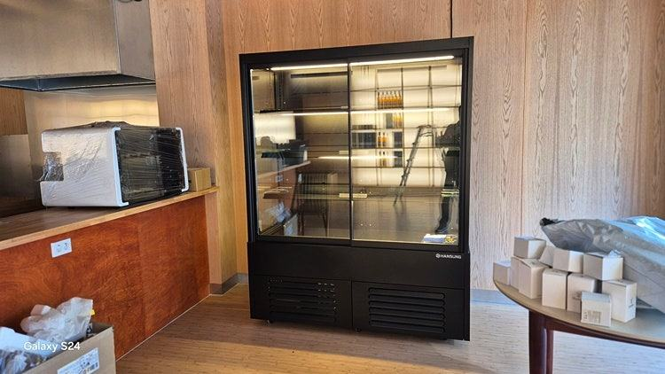
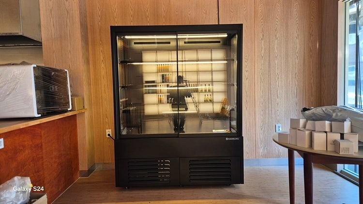
3. 열이 빠질 공간
냉장고는 안을 차갑게 하는 만큼 바깥으로 열을 내보냅니다. 뒷면이나 아래쪽 기계실 주변이 벽이나 가구에 막혀 있으면 열이 빠지지 못해 콤프레셔가 더 오래, 더 시끄럽게 돌아갑니다.
매립형으로 인테리어 가구 안에 넣을 계획이라면 통풍구 위치를 설계 단계에서 함께 정해야 합니다. 마감이 끝난 뒤에 구멍을 내려면 일이 커집니다.
- 뒷면과 벽 사이 간격을 확보하세요.
- 매립 설치라면 통풍구 위치를 인테리어 업체와 공유하세요.
4. 배수와 소음
냉장 설비에서는 결로와 제상수가 생깁니다. 자연 증발 방식인지, 배수구로 빼야 하는지 확인하고, 배수구가 멀다면 호스를 어디로 지나가게 할지 동선에 걸리지 않게 정해 두세요.
소음은 대부분 콤프레셔와 팬의 진동에서 시작됩니다. 손님 테이블 바로 옆이나 얇은 칸막이 벽 쪽이라면 진동이 벽을 타고 전달될 수 있으니, 자리를 정할 때 손님이 앉는 위치와 거리를 함께 보세요.
체크리스트
- 출입문·계단·엘리베이터 반입 경로
- 설치 자리 바닥 수평과 단차
- 전용 콘센트와 차단기 여유 용량
- 뒷면·기계실 통풍 공간
- 제상수 배수 방식과 호스 경로
- 손님 좌석과의 거리
현장에서 자주 보는 경우: 장비만 보고 들였다가 소음·배수로 고생할 때
대형 매장에서 워크인 냉장고를 들일 때 특히 자주 보는 일입니다. 장비 사양만 보고 계약했다가 설치 뒤에 실외기 소음 민원, 배수 역류, 열이 빠지지 못해 생기는 과부하로 뒤늦게 연락을 주십니다.
크고 무거운 설비라 한 번 자리를 잡으면 옮기기가 어렵다는 게 문제입니다.
그래서 상담 때는 건물 전기 용량과 차단기 여유, 실외기를 둘 수 있는 위치와 소음·열 배출 방향, 배수구까지의 거리와 바닥 기울기, 반입 경로와 배관 노출 방식을 목록으로 정리해 두시길 권해 드립니다.
현장 사진과 간단한 평면도를 함께 보내 주시면 음료 냉장고 한 대를 들이실 때도 같은 기준으로 더 현실적인 설치안을 드릴 수 있습니다.
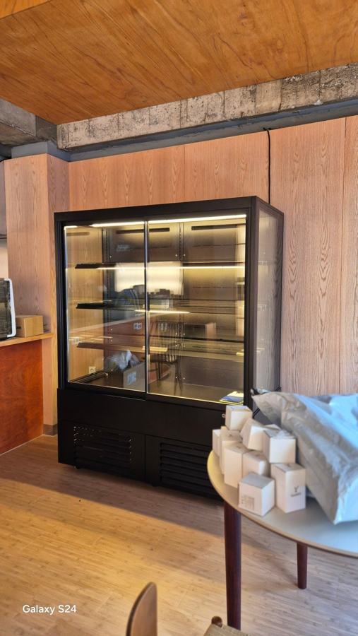
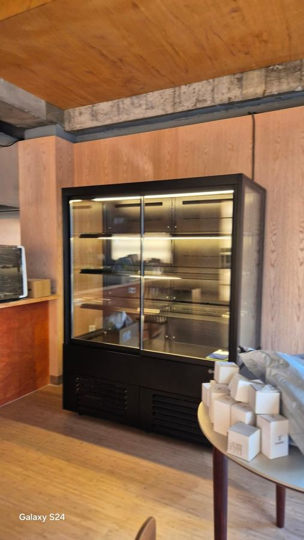
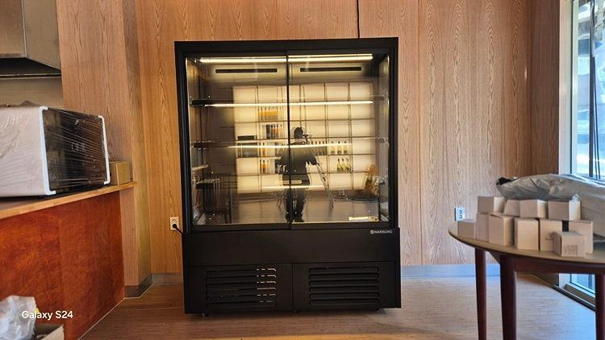
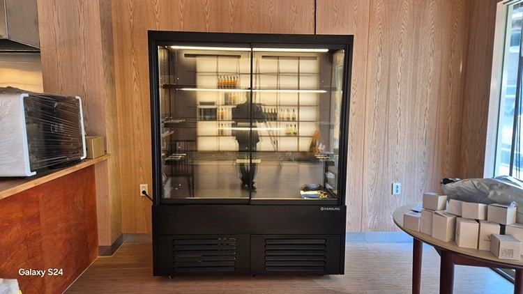
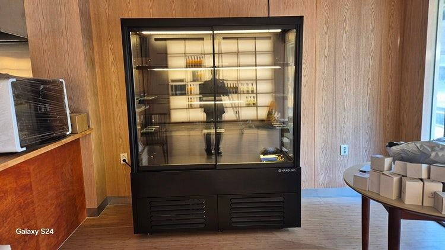
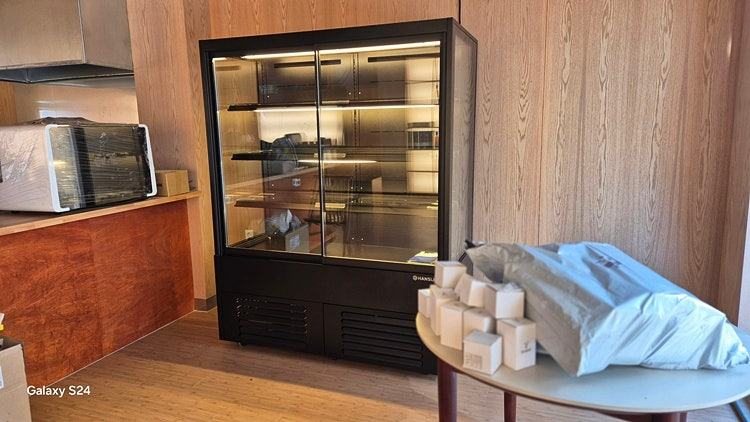
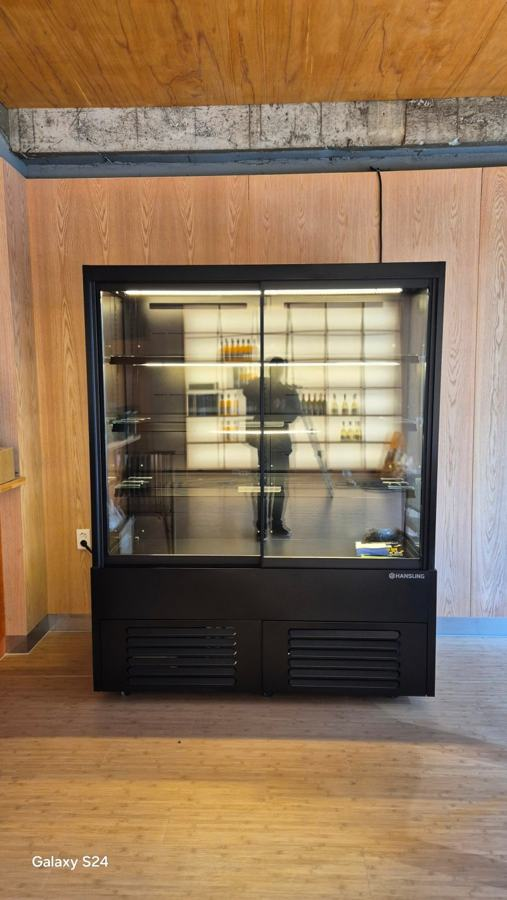
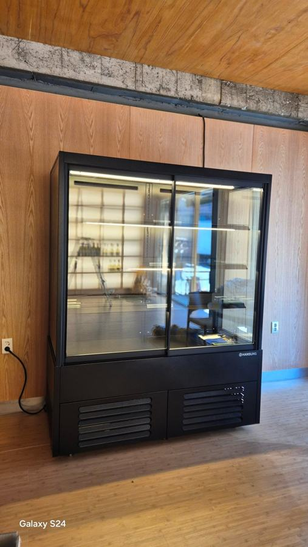
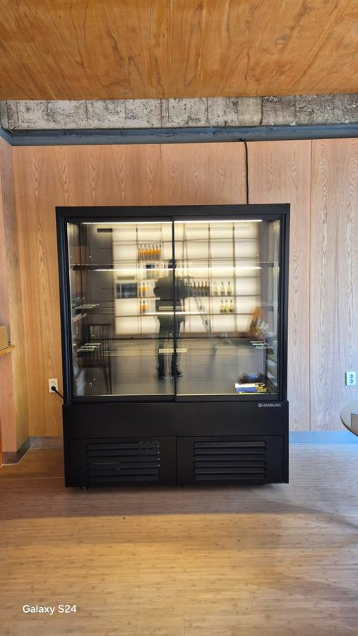
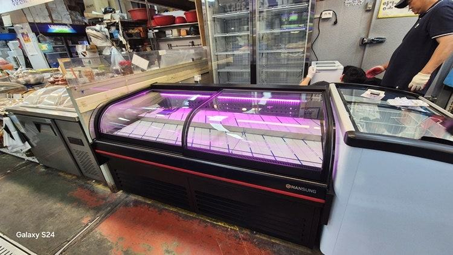
자주 묻는 질문
음료수 냉장고를 벽에 딱 붙여 설치해도 되나요?
기계실 위치에 따라 다르지만 대부분 열이 빠질 간격이 필요합니다. 벽에 붙이면 콤프레셔가 오래 돌아 소음과 전기 사용이 늘 수 있으니 설치 전에 필요한 간격을 확인해 주세요.
설치 당일 매장에서 준비할 것이 있나요?
반입 경로에 걸리는 물건을 치워 두고, 전용 콘센트 위치와 배수 방향을 정해 두시면 됩니다. 엘리베이터 사용이 필요하면 건물 관리실에 미리 알려 두세요.
설치 후 소리가 커졌는데 고장인가요?
뒷면 통풍이 막혔거나 바닥 수평이 틀어져 진동이 커진 경우가 많습니다. 주변 공간과 수평을 먼저 확인해 보시고, 그래도 계속되면 A/S를 요청해 주세요.
매장 조건에 맞춰 만드는 한성쇼케이스
원하시는 제품 사진과 설치할 공간 사진만 보내 주셔도 매장에 맞는 구성을 추천해 드립니다.
- 전국 240여 개 A/S 전담 센터 운영
- 본사 대량 자재 매입으로 품질 대비 합리적인 가격
- 유럽제·삼성 냉각 콤프레셔 적용
- 국내 최초 쇼케이스 전문 디자이너 상주
매장 폭과 원하는 진열 구성을 알려 주세요. 실측과 견적을 안내해 드립니다.
031-986-2458